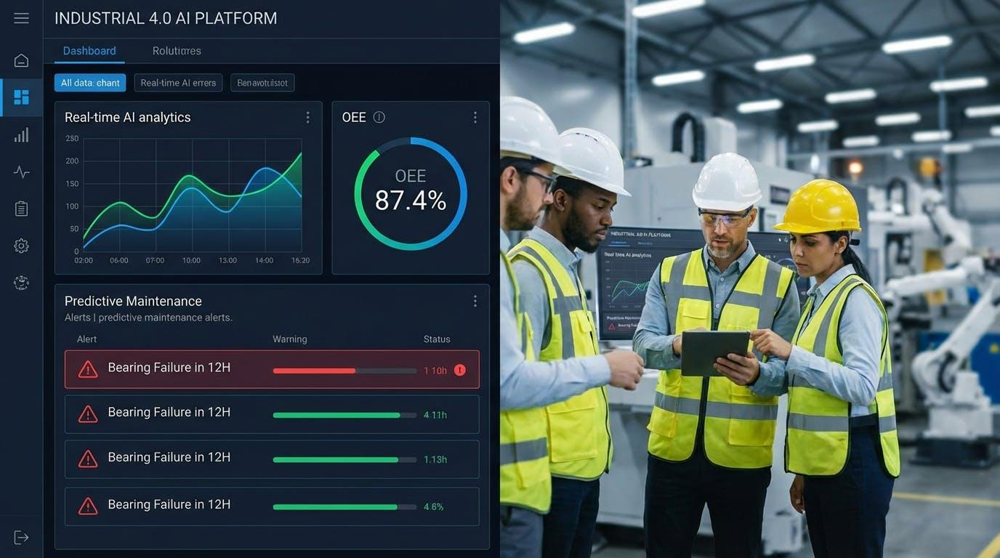
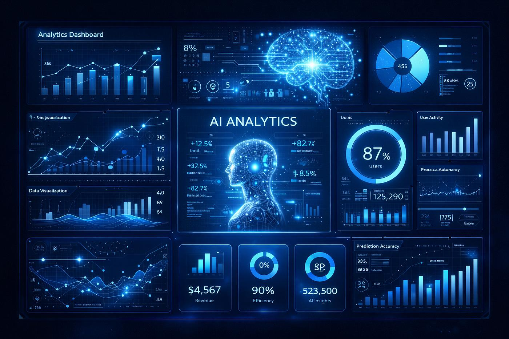
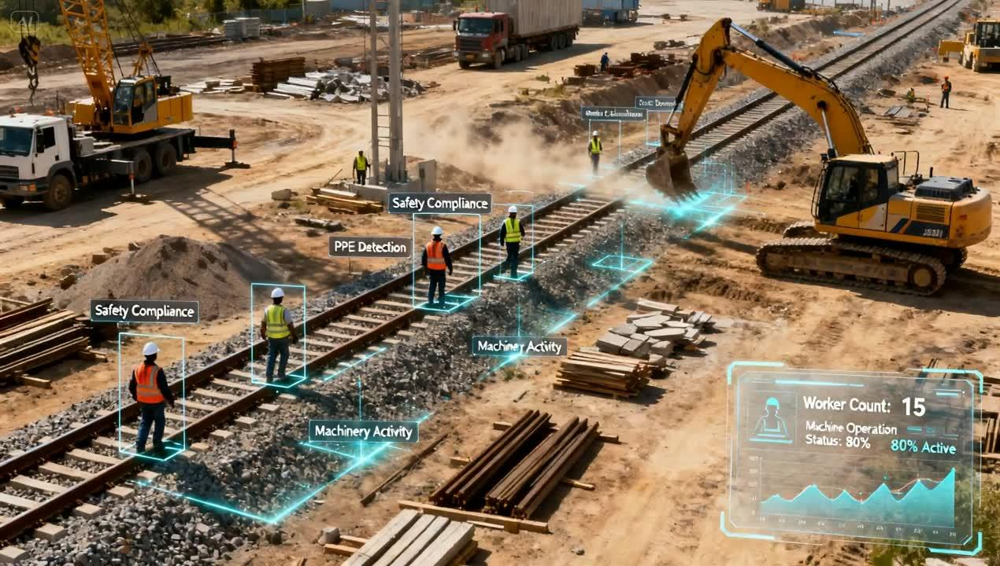
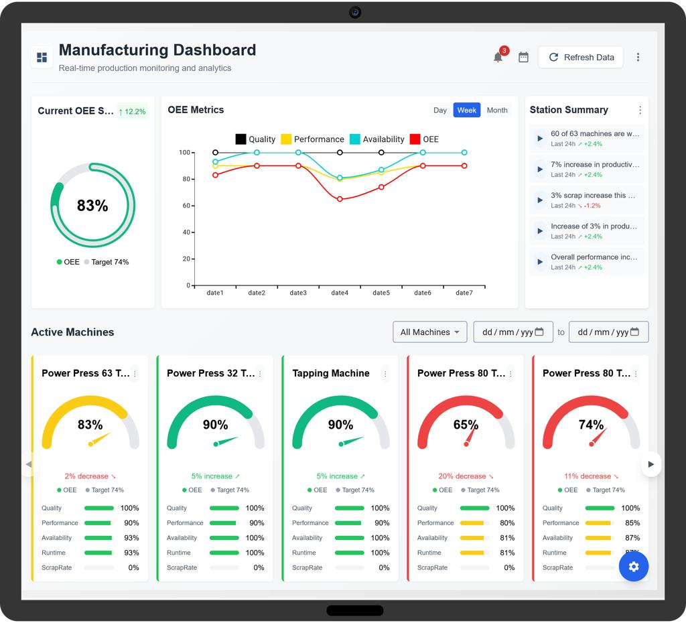
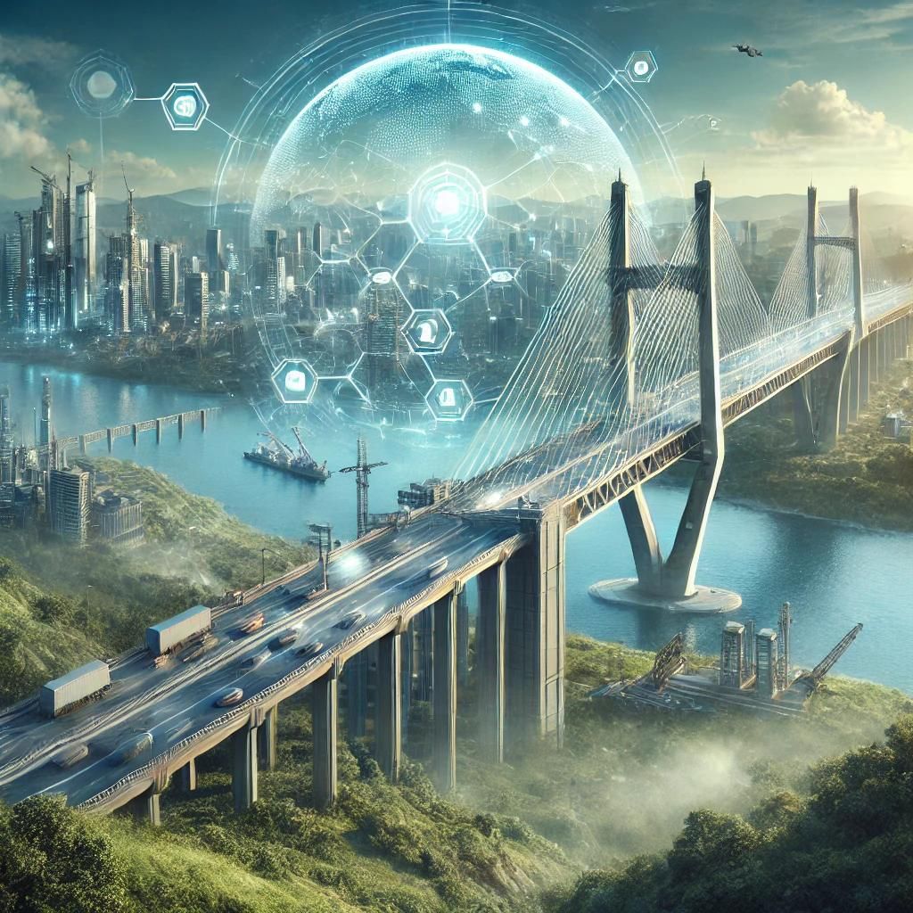

Helping organizations improve productivity, decision-making and operational efficiency through software engineering, Artificial Intelligence, automation and robotics.

Modern engineering organizations require more than construction expertise. They need intelligent software, automation, AI-assisted decision making, computer vision and connected business systems.
Vuzi Tech combines decades of enterprise software experience with practical engineering knowledge to build solutions that improve real-world operations.
We design technology solutions that simplify operations, improve visibility and support business growth.
Custom software, ERP, workflow automation, mobile applications and cloud solutions.
Scalable applications, secure infrastructure, cloud migration and digital platforms.
Automating repetitive processes, approvals, documentation and operational workflows.
Artificial Intelligence enables organizations to improve decision-making, automate repetitive work and gain insights from engineering, operational and business data.
Intelligent assistants that support engineering teams, documentation, project coordination and business operations.
Automated extraction, classification and validation of engineering documents, drawings and reports.
Data-driven forecasting to improve planning, resource utilization and project performance.
Automating approvals, documentation, reporting and operational processes.


Computer Vision enables automated visual inspection, quality monitoring and safety compliance across construction and industrial environments.
PPE detection, restricted area monitoring and worker safety compliance.
Progress tracking, site activity analysis and visual project documentation.
AI-assisted inspection for manufacturing, construction and infrastructure projects.
Visual monitoring of equipment, materials and operational assets.
Automation and robotics improve productivity, accuracy and operational efficiency across industrial and infrastructure environments.
Autonomous and semi-autonomous robotic systems supporting inspection, monitoring and industrial operations.
Automation solutions that streamline industrial workflows and operational processes.
Connected devices, real-time monitoring and intelligent engineering systems.

Our technology solutions are designed to solve practical engineering and business problems rather than simply introducing new software.
Digital project management, progress tracking, documentation and reporting.
Quality inspection, production monitoring, automation and operational dashboards.
Asset monitoring, maintenance planning, field operations and workflow management.
Business applications, ERP, workflow automation and executive dashboards.
Combining enterprise software experience with engineering knowledge to deliver practical, future-ready digital solutions.
Modern cloud-native applications, secure deployments, API integrations and scalable architectures.
Cross-platform applications for field engineers, management teams and business operations.
Connecting business systems, machines, IoT devices and enterprise applications.
Dashboards, analytics, reporting and executive decision support.
Secure application design, identity management, data protection and infrastructure security.
Helping organizations adopt emerging technologies through structured innovation and practical implementation.
Every solution begins with understanding business needs and ends with measurable operational improvements.
Business objectives, engineering workflows, existing systems and operational challenges.
Solution architecture, user experience, integration strategy and implementation planning.
Modern software, AI models, automation and scalable platforms.
Connect systems, devices, business processes and engineering operations.
Testing, training, rollout and production deployment.
Continuous optimization, analytics, feedback and long-term support.
Our strength lies in combining engineering domain expertise with modern software technologies to build practical, scalable and future-ready solutions.
Technology solutions are designed around real engineering workflows, construction processes and operational requirements.
Artificial Intelligence is applied to improve productivity, decision-making and operational efficiency.
Cloud-native, API-driven and scalable software built for long-term growth.
Supporting organizations through continuous innovation, maintenance and technology evolution.
Technology continues to reshape infrastructure, manufacturing and industrial operations. Vuzi Tech is committed to helping organizations embrace digital transformation through practical, engineering-focused innovation.
Our long-term vision includes Artificial Intelligence, Computer Vision, Robotics, Industrial Automation and intelligent engineering platforms that improve productivity, safety and operational excellence.
Start A Conversation